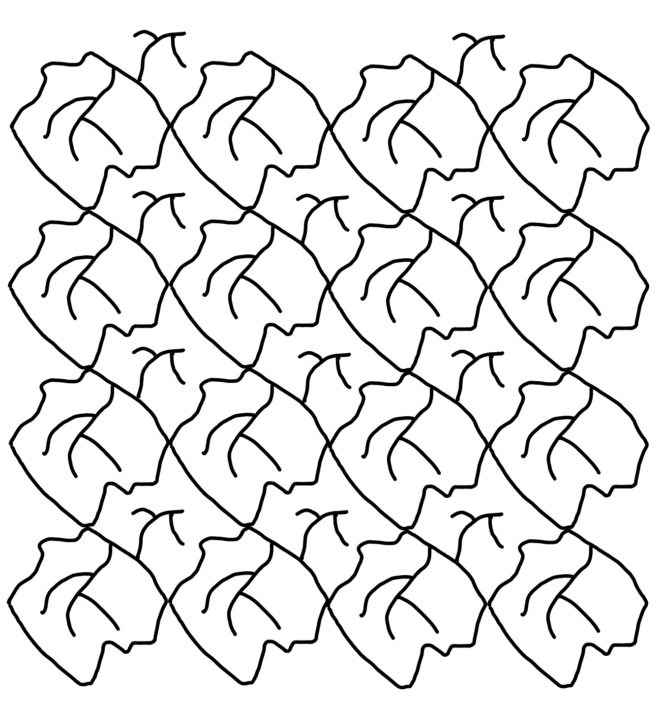
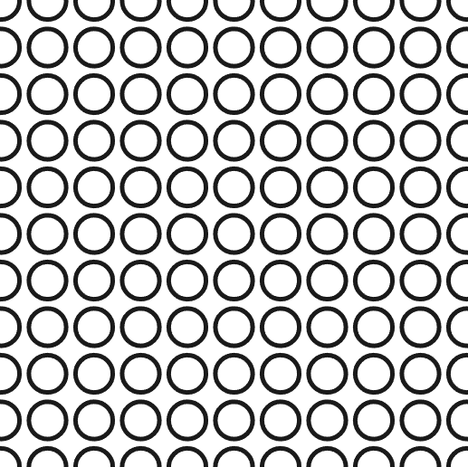
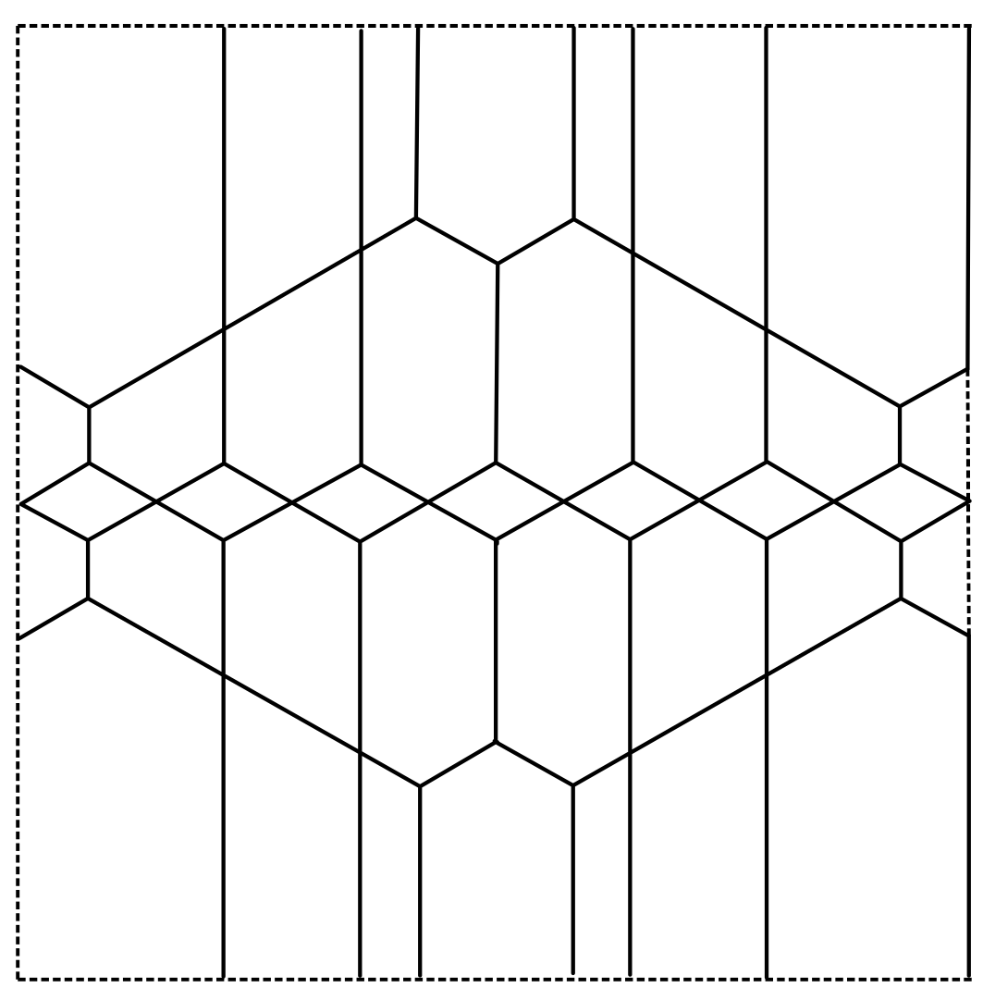
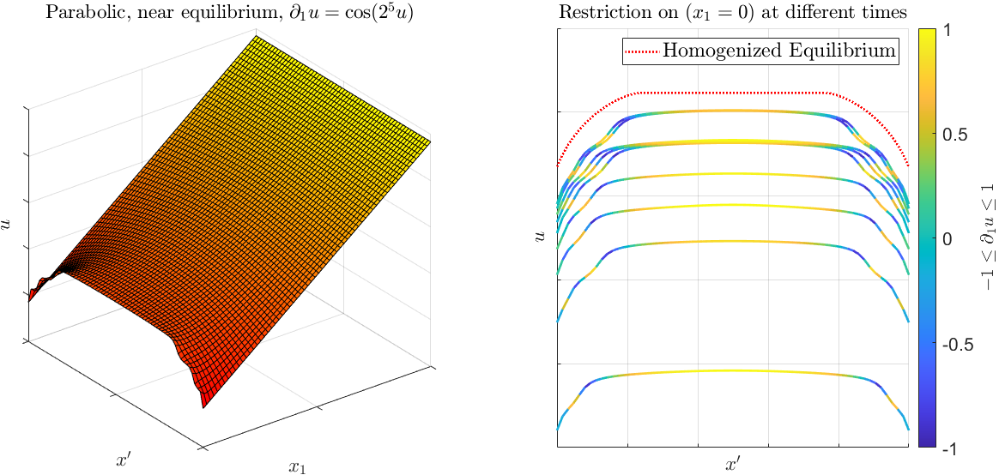

黄忠淦
Zhonggan Huang
ABOUT ME
I just defended on March 19 2026 in University of Utah. My advisor is Prof. W. Feldman. I'm interested in homogenization theory, free boundary problems and shape optimization problems.
MY CONTACT DETAILS
Address: 155 South 1400 East, JWB 319, Department of Mathematics, University of Utah, Salt Lake City, U.S.
E-mail: zhonggan@math.utah.edu
溯洄从之，道阻且长。溯游从之，宛在水中央。
Recent figures







RESEARCH
PUBLICATIONS
On the attainability of the singular Wiener bound
arXiv: 2508.08208, accepted by SIAM Journal on Mathematical Analysis
Abstract: We characterize the lower and upper attainability of the Wiener bound (also known as the conductive analogue of the Voigt-Reuss-Hill bound in elasticity theory) for singularly distributed conductive material mixtures. For the lower attainability we consider mixtures in which high-conductance materials support on sets having finite one-dimensional Hausdorff measures. We show that, under a mild coercivity condition, the kernel of the effective tensor of the mixture is equal to the orthogonal complement of the homotopy classes of closed paths in the supporting set. This shows that a periodic planar network has positive definite effective tensor, i.e., it is resilient to fluctuations, if and only if the network is reticulate. We prove a geometric characterization of the upper attainability by applying a transformation from varifolds to matrix-valued measures. We show that this transformation leads to an equivalence between two distinct notions from material science and geometric measure theory respectively: conductance maximality and area criticality. Based on this relation we show a pointwise dimension bound for mixtures that attain the upper Wiener bound by applying a fractional version of the monotonicity formula for stationary varifolds. This dimension bound illustrates how the maximality condition constrains the local anisotropy and the local distribution of conductance magnitudes. Both the lower and upper attainability results have potential novel applications in modeling leaf venation patterns.
Homogenization of a vertical oscillating Neumann condition
Joint with William Feldman, Archive for Rational Mechanics and Analysis, DOI: 10.1007/s00205-026-02188-2
Abstract: We homogenize the Laplace and heat equations with the Neumann data oscillating in the "vertical" u-variable. These are simplified models for interface motion in heterogeneous media, particularly capillary contact lines. The homogenization limit reveals a pinning effect at zero tangential slope, leading to a novel singularly anisotropic pinned Neumann condition. The singular pinning creates an unconstrained contact set, generalizing the contact set in the classical thin obstacle problem. We establish a comparison principle for the heat equation with this new type of boundary condition. The comparison principle enables a proof of homogenization via the method of half-relaxed limits from viscosity solution theory. Our work also demonstrates, for the first time in a PDE problem in multiple dimensions, the emergence of rate-independent pinning from gradient flows with wiggly energies. Prior limit theorems of this type, in rate-independent contexts, were limited to ODEs and PDEs in one dimension.
Regularity theory of a gradient degenerate Neumann problem
Joint with William Feldman, Journal de Mathématiques Pures et Appliquées, Volume 209, May 2026, 103863
Abstract: We study the regularity and comparison principle for a gradient degenerate Neumann problem. The problem is a generalization of the Signorini or thin obstacle problem which appears in the study of certain singular anisotropic free boundary problems arising from homogenization. In scaling terms, the problem is critical since the gradient degeneracy and the Neumann PDE operator are of the same order. We show the (optimal) \(C^{1,\frac{1}{2}}\) regularity in dimension \(d=2\) and we show the same regularity result in \(d\geq 3\) conditional on the assumption that the degenerate values of the solution do not accumulate. We also prove a comparison principle characterizing minimal supersolutions, which we believe will have applications to homogenization and other related scaling limits.
Is mean curvature flow a gradient flow?
arXiv: 2212.03701 (to appear in Proceedings of the American Mathematical Society)
Abstract: It is well-known that the mean curvature flow is a formal gradient flow of the perimeter functional. However, by the work of Michor and Mumford [7,8], the formal Riemannian structure that is compatible with the gradient flow structure induces a degenerate metric on the space of hypersurfaces. It is then natural to ask whether there is a nondegenerate metric space of hypersurfaces, on which the mean curvature flow admits a gradient flow structure. In this paper we study the mean curvature flow on two nondegenerate metric spaces of simple closed plane curves: the uniformness-preserving metric structure proposed by Shi and Vorotnikov [11] and the curvature-weighted structure proposed by Michor and Mumford [8], and prove that the mean curvature flow is not a gradient flow in either of the spaces.
Homogenization of enhancing thin layers
Journal of Differential Equations, Volume 282, 2021, Pages 330-369
Abstract: This paper derives an explicit formula for the effective diffusion tensor by using the solutions to some effective cell problems after homogenizing Road effective boundary conditions (EBCs). The concept of Road EBCs was proposed recently by H. Li and X. Wang, and in this paper, we extend the effective conditions on closed curves to those on patterns, especially on the included nodes. We also prove that homogenization process commutes with the derivation of Road EBCs. By analyzing the effective diffusion tensor, we obtain several rules for maximizing its trace with given Road-effective-diffusivity/scale and length/scale in each cell and define a notion of balanced patterns. Moreover, we give an estimate of the trace of effective diffusion tensor of general patterns as Road-effective-diffusivity/scale goes to infinity.
PREPRINTS
On the continuum limit of t-SNE for data visualization
Joint with Jeff Calder, Ryan Murray, and Adam Pickarski, arXiv: 2604.12041
Abstract: This work is concerned with the continuum limit of a graph-based data visualization technique called the t-Distributed Stochastic Neighbor Embedding (t-SNE), which is widely used for visualizing data in a variety of applications, but is still poorly understood from a theoretical standpoint. The t-SNE algorithm produces visualizations by minimizing the Kullback-Leibler divergence between similarity matrices representing the high dimensional data and its low dimensional representation. We prove that as the number of data points $n \to \infty$, after a natural rescaling and in applicable parameter regimes, the Kullback-Leibler divergence is consistent as the number of data points $n \to \infty$ and the similarity graph remains sparse with a continuum variational problem that involves a non-convex gradient regularization term and a penalty on the magnitude of the probability density function in the visualization space. These two terms represent the continuum limits of the attraction and repulsion forces in the t-SNE algorithm. Due to the lack of convexity in the continuum variational problem, the question of well-posedeness is only partially resolved. We show that when both dimensions are 1, the problem admits a unique smooth minimizer, along with an infinite number of discontinuous minimizers (interpreted in a relaxed sense). This aligns well with the empirically observed ability of t-SNE to separate data in seemingly arbitrary ways in the visualization. The energy is also very closely related to the famously ill-posed Perona-Malik equation, which is used for denoising and simplifying images. We present numerical results validating the continuum limit, provide some preliminary results about the delicate nature of the limiting energetic problem in higher dimensions, and highlight several problems for future work.
DISSERTATION & THESES
📘 PhD Dissertation (2026)
Title: Homogenization in complex conductive networks and interface motions
Advisor: William M. Feldman
Institution: University of Utah
Defense Date: March 19, 2026
Advisor: William M. Feldman
Institution: University of Utah
Defense Date: March 19, 2026
Abstract: This dissertation consists of three projects in the analysis of partial differential equations and geometric variational problems, motivated by questions arising in homogenization theory, free boundary problems, shape optimization and geometric analysis. The unifying theme is the rigorous characterization of singular limits and extremal structures from scientific or engineering problems, where classical notions and techniques break down. We will also discuss the results in this dissertation in a slightly broader and raise some challenging problems.
📄 Master Thesis (2021)
Title: Topics on reaction-diffusion equations with large diffusion rates within thin components
Advisor: Linlin Su and Xuefeng Wang
Institution: Southern University of Science and Technology (SUSTech)
Advisor: Linlin Su and Xuefeng Wang
Institution: Southern University of Science and Technology (SUSTech)
Abstract: This thesis investigates reaction-diffusion systems where diffusion is highly enhanced in thin layers. Using homogenization techniques, we derive effective interface conditions and analyze the limiting behavior of solutions.
EDUCATION
🎓 University of Utah, PhD in Mathematics
Aug 2021 – May 2026
🏫 Southern University of Science and Technology (SUSTech), Master of Mathematics
Sep 2019 – Jun 2021
🌱 Southern University of Science and Technology (SUSTech), Bachelor of Mathematics
Sep 2015 – Jun 2019
NOTES, SLIDES & VIDEOS
[SLIDE] Attainability of the singular Wiener bound and leaf venation patterns
November 03, 2025 · WashU St. Louis
Abstract: This talk presents recent progress on the attainability of the singular Wiener bound in homogenization theory and its connection to optimal leaf venation patterns.
[VIDEO] Regularity theory of a gradient degenerate Neumann problem
August 13, 2024 · Oaxaca (BIRS Workshop)
Abstract: Recorded talk at the BIRS workshop.
[SLIDE] 一个类Signorini梯度退化问题的最优正则性
10/05/2024 · 南方科技大学
摘要： 介绍了一类类似 Signorini 问题的梯度退化型自由边界问题，并给出最优正则性结果。报告内容涵盖问题背景、主要定理和证明思路。
[SLIDE] 大偏差原理与梯度流试讲
11/17/2022 · 西北大学
摘要： 试讲内容：大偏差原理的基本思想及其与梯度流的关系，重点讨论了变分方法和收敛性，并给出了若干应用示例。
[NOTE] Notes on partial differential equations: 2018-2019 (SUSTech lecture notes)
Southern University of Science and Technology
Abstract: Comprehensive lecture notes covering elliptic and parabolic PDE theory, Sobolev spaces, weak solutions, and applications to reaction-diffusion systems. Compiled during undergraduate studies.
Additional teaching materials and recorded talks available upon request.